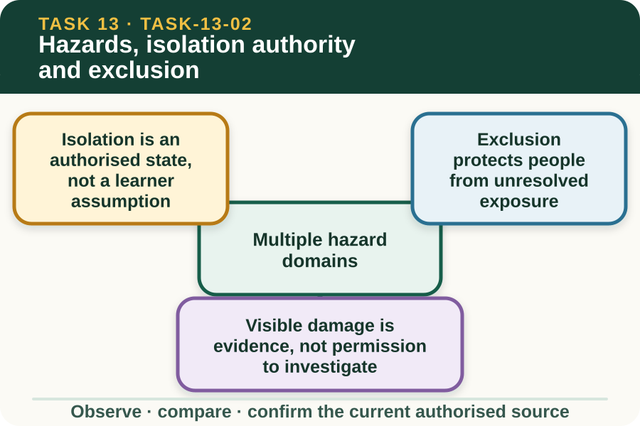
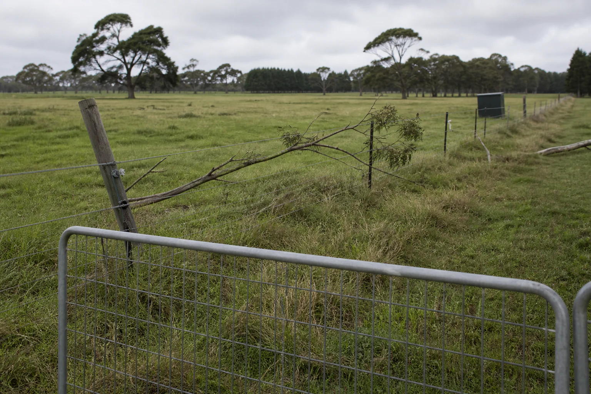

Learning purpose
Identify when work must stop and which authorised source or person controls the next action.
Task 13 · Lesson 2 of 4
Identify when work must stop and which authorised source or person controls the next action.
Learning purpose
Identify when work must stop and which authorised source or person controls the next action.
Success criteria
Learning boundary
Supplementary learning and formative practice only. Current RTO assessment, local procedures and authorised supervision control real work.

Planning may need to consider electrical energy, stored energy in fence materials, sharp or damaged components, uneven ground, vegetation, fire conditions, animals, vehicles, public access and nearby services. The relevant combination depends on the real site and work brief.
The learning site supports recognition and reporting only. Exact controls, distances, status confirmation and work methods come from the approved local risk process, manufacturer information and direct supervision.
Before practical work, the system's status must be confirmed through the workplace's authorised process by the person assigned that responsibility. Appearance, silence, an open gate or an unlit indicator does not prove an electric fence is safe to approach.
This lesson deliberately provides no isolation sequence. A learner identifies missing status evidence, remains outside the controlled area and requests confirmation from the authorised person.
An exclusion boundary separates people and activities from an area whose status, hazards or work state require control. Its location, signs, access and release criteria are site-specific and belong to the current plan.
A learner respects the marked boundary, reports unexpected entry or damage and does not move the boundary from guidance on a public website. If the boundary is unclear, access remains unresolved.

A displaced insulator, fallen branch, broken component, unreadable sign or damaged enclosure can indicate that the approved system state may have changed. These observations should be located and reported from an authorised safe position.
Do not approach or interact with the fence, clear vegetation, open an enclosure or follow a conductor to find the cause. The supervisor controls the next source check and any specialist involvement.
Fictional worked example
Observed evidence: On 9 September 2027, a fictional site photograph shows an unreadable status tag at Gate E-02 and a damaged insulator farther along the line. The work brief supplies no current isolation confirmation. Decision and reason: Riley cannot infer system status from the quiet scene or decide that the visible damage is the only fault. Safe action: Riley remains outside the marked exclusion area and reports the gate identifier, image time, missing status evidence and visible condition. Result: The authorised supervisor controls access and checks the approved sources. Next check or record: Riley records the confirmed work status and next owner without describing isolation, electrical testing or repair.
A concise brief states the planned purpose, current location reference, visible condition, missing authority or source, present access status and decision required. It should not contain a guessed cause or an improvised control.
Closed-loop communication confirms that affected people understand the status and who owns the next action. Real names and access details remain in the controlled workplace system, not the public learning record.
A hold point closes only when the authorised person confirms the required status through current workplace sources. Another student's statement, an old tag or a completed quiz cannot release the area.
The website can record the reasoning used to stop and refer. It does not authorise entry, confirm electrical status or replace formal practical observation by the RTO.
Formative practice
Each option explains the consequence. These answers save only on this device.
Written application
Apply and keep a learning record
Annotate a fictional site photograph with safe observation location, controlled exclusion area, visible conditions, missing status evidence and the authorised decision owner. Do not add any practical procedure.
Learning record: A supplementary-learning stop-and-refer map with status and access kept explicitly unresolved.
Lesson responses and the activity are formative learning only. Formal sufficiency and competence remain with the current RTO process.
Source basis: AHCINF205 Release 1 requirements for confirming instructions, identifying hazards and reporting unsafe conditions under supervision. Current local electrical-status, access, exclusion and repair controls remain wholly authorised.